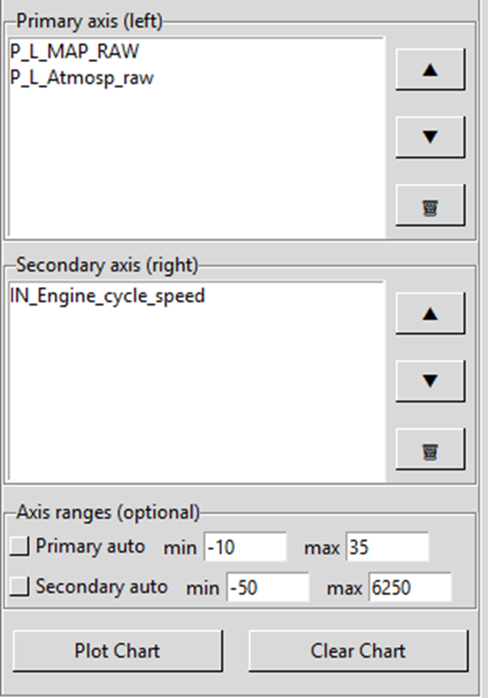

Axis Controls
The axis controls allow you to organize PIDs into primary and secondary axes and customize the chart display. These controls are located in the left panel below the PID search box.

Primary and Secondary Axis List Boxes
The axis controls contain two list boxes that display which PIDs are assigned to each axis:
Primary Axis (Left)
PIDs in the Primary axis (left) list box are plotted against the left Y-axis of the chart. This axis is typically used for the main parameter you want to analyze.
Secondary Axis (Right)
PIDs in the Secondary axis (right) list box are plotted against the right Y-axis of the chart. This axis allows you to overlay additional data with different scales or units on the same chart.
Why Two Axes? Different PIDs often have vastly different value ranges. For example, manifold pressure might range from 10-30 PSI while engine speed ranges from 0-3000 RPM. Using separate axes allows both to be clearly visible on the same chart.
Control Buttons
Each axis list box has three control buttons on the right side:
▲ Move Up Button
Moves the selected PID up in the list order. The order of PIDs in the list determines their display order on the chart.
▼ Move Down Button
Moves the selected PID down in the list order.
🗑 Delete Button
Removes the selected PID from the axis. The PID remains available in the main PID search list and can be re-added at any time.
How PID Order Affects Chart Display
The order of PIDs in each list box directly affects how they appear on the chart:
Legend Order
PIDs appear in the chart legend in the same order they appear in the list boxes. Primary axis PIDs are listed first, followed by secondary axis PIDs.
Line Drawing Order (Z-Order)
PIDs at the top of the list are drawn first, and PIDs at the bottom are drawn last. This means:
- PIDs at the bottom of the list appear on top of other lines when they overlap
- PIDs at the top of the list may be hidden behind other lines if their values overlap
- Rearrange PIDs using the ▲ and ▼ buttons to bring important data to the front
Tip: If an important PID is being hidden by other lines on the chart, move it toward the bottom of the list so it draws on top of the other data.
Color Assignment
The chart automatically assigns colors to each PID based on their position in the list. While you cannot directly control the colors, you can influence which PID gets which color by changing the order.
Axis Ranges (Optional)
The Axis ranges (optional) section allows you to manually set the minimum and maximum values for each axis.
Auto Scaling Checkboxes
Primary auto and Secondary auto checkboxes control automatic scaling:
- Checked (default) - The axis automatically scales to fit all data values. The min and max entry boxes are disabled.
- Unchecked - Manual scaling is enabled. You can enter specific min and max values to control the axis range.
Min and Max Entry Boxes
When auto scaling is disabled, you can enter custom values:
- min - Sets the minimum value displayed on the axis
- max - Sets the maximum value displayed on the axis
When to Use Manual Scaling
Manual axis scaling is useful when:
- Comparing multiple snapshots - Use the same axis ranges across different snapshots to make visual comparison easier
- Focusing on a specific range - Zoom in on a particular value range to see small variations more clearly
- Excluding outliers - Set limits that exclude extreme values to better see the typical operating range
- Standardizing charts - Create consistent chart scales for documentation or reporting
Example: When analyzing turbo performance across multiple snapshots, you might set the primary axis (manifold pressure) to always display 10-30 PSI and the secondary axis (engine speed) to 0-3000 RPM. This makes it easy to compare performance between different snapshots.
Plot Chart and Clear Chart Buttons
Plot Chart Button
Generates or updates the chart based on the current axis configuration. The chart automatically updates when you:
- Add or remove PIDs from either axis
- Reorder PIDs using the ▲ or ▼ buttons
- Change axis range settings
You can also manually click Plot Chart to refresh the display.
Clear Chart Button
Removes all PIDs from both axes and clears the chart display. This resets the axis controls to their default state, allowing you to start fresh with a new chart configuration.
Note: Clearing the chart does not close the snapshot file. All PID data remains available in the search list and can be re-added to create new charts.
Workflow Example
Here's a typical workflow for creating a custom chart:
- Search for and select PIDs in the main PID list
- Click ➕ Add to Primary or ➕ Add to Secondary to assign them to an axis
- Use the ▲ and ▼ buttons to arrange PIDs in the desired order
- Optionally, uncheck the auto scaling boxes and set custom min/max values
- The chart updates automatically, or click Plot Chart to refresh
- Use the Chart Toolbar to zoom, pan, or save the chart
Related Topics